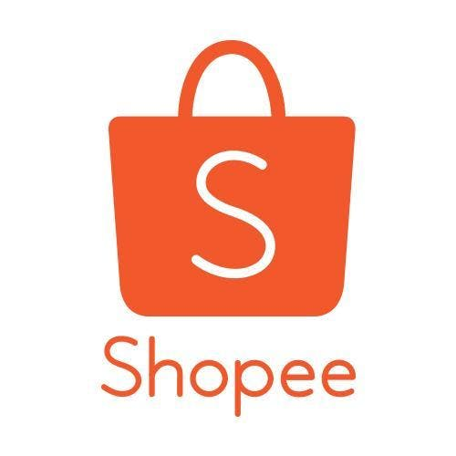
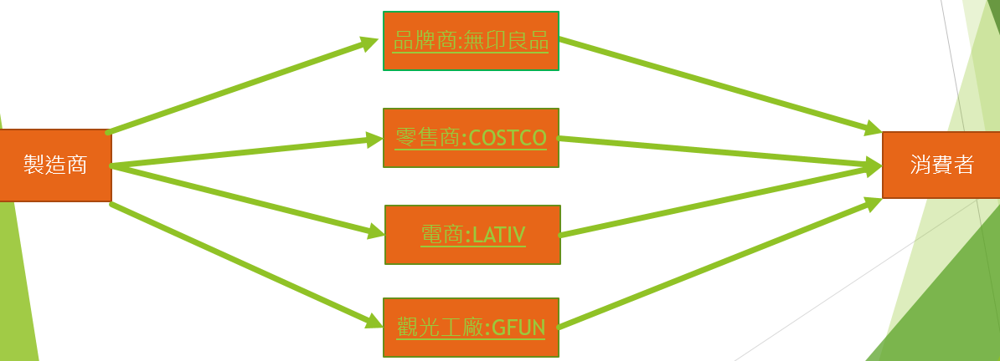

電商跟紡織業如何結合
mlo
可以創造一平價品牌來打入市場
或現有產品來更專研發展學習跟網路行銷商配合的營運模式再來結合智慧製造對市場需求快速反應。
台北服飾快速設計打樣中心
他們會協助業者透過最新流行趨勢延伸設計開發應用且將服裝設計製版技術，資訊模組化輔以高科技製衣設備 更能提升服裝製樣的速度跟品質。
讓廠商能縮短產品上市時間即時反應市場能力跟接單性
他們會協助業者透過最新流行趨勢延伸設計開發應用且將服裝設計製版技術，資訊模組化輔以高科技製衣設備 更能提升服裝製樣的速度跟品質。
讓廠商能縮短產品上市時間即時反應市場能力跟接單性
彰化織襪快速打樣中心、雲林毛巾快速打樣中心
貴公司目前產品賣點:健康紗 有紅外線功能能提高人體活力有禦寒保暖功能,因為大眾對衣服的要求已經不只是耐穿、耐看，衣服的舒適度以 及實用性 已經是大眾會考量的因素 且了解客戶及市場需求 站在客戶端立場來開發新產品 並且重新包裝後在線上平台行銷
位於桃園的聚紡公司 創立戶外用品品牌「GFUN」也成立了觀光工廠 讓消費者逐步了解製作過程
觀光工廠著扮演增加曝光度,蒐集消費者反應的平台,讓消費者知道聚紡到底生產什麼高科技產品
日本紡織大廠「東麗」跟台灣最多人買的UNIQLO就是紡織廠跟企業做結合的成功案例
合作方式:由優衣庫在前端，快速觀察市場與消費者需求，帶回給後端的東麗研發與突破後，再交回給優衣庫行銷、販售。由原料端到成品，兩者共同開發
建築起一條龍的骨幹
電商平台屬性
| 企業 | 消費者 | |
|---|---|---|
| 企業 | B2B | B2C |
| 消費者 | C2B | C2C |
尋找客源方式
制定好客群 該調查好哪種客群適合自家商品 且調查好客群做產品行銷的文案活動之類 才更容易引起顧客共鳴。
服飾業現況
從設計到產品越快越好
總部每天兩次接收來自全球的訊息，做出決策後立刻傳送到生產線，改變產品樣式，
把由設計到銷售所需的準備時間大幅縮減到兩周內，與精品服飾業者傳統的一季，其速度快了六倍。
通路行銷結合大數據
以網路商店分析消費者，提供更準確的時尚訊息，讓決策者更精準找出目標市場。虛實整合的大數據資料庫。
整合大數據資料庫將網路上的巨量資料視為實體商店鋪貨的前測指標，再從回饋資訊中修改產品。 以上都是網路商城才可以實現的服務。
YAHOO
優點
(1)擁有良好企業形象可信度高。(2)在雙北地區提供都會送服務讓人們更快速拿到貨品。
(3)24H客服全年無休 15天鑑賞期 結合自家中古車平台拍賣。
缺點
安全性低 無法保證商品品質 商品價格偏高。PChome
優點
開啟先例建立自家倉庫來達到24小時到貨 成為公司賣點 發票電子化寄送 商品一目了然的知道提供了那些付款方式 全台最多商品在庫平台。缺點
退換貨麻煩 網頁看起來太撩亂且無法清楚馬上找到自己所需要的 對眼睛不好的人較不友善 買賣家無法線上諮詢。露天
優點
有自己的內部管理系統,會將違規賣家停權令消費者放心,擁有高知名度 分類商品詳細使顧客可以更快速找到自己所想要的商品 世界第四大拍賣平台 較多其他平台沒有的商品
缺點
收較高成交手續費 使賣家容易轉往其他平台 資安漏洞多 容易被詐騙蝦皮

優點
客群廣泛且販賣商品多 並且常配合節日有許多不同活動 舉例來說雙11購物節 免運標準比其他平台來的低 且賣家的商品隨拍隨快速上架 不管對買家賣家都很和善的平台 且賣家跟買家擁有私人的對話框缺點
賣家容易刊登商品以及看不到實物容易買到劣質品 網路拍賣詐欺案層出不窮無法有效防範| 優點 | 缺點 |
|---|---|
|
1.易走出在地市場 跨境全球
2.店商平台24小時可供選購 上班時間在處理訂單 3.前期投資成本低 |
1.只透過網路,顧客服務受限 2.顧客無法得知商品真實狀況 3.需等待配送時間 4.市場競爭激烈 |
